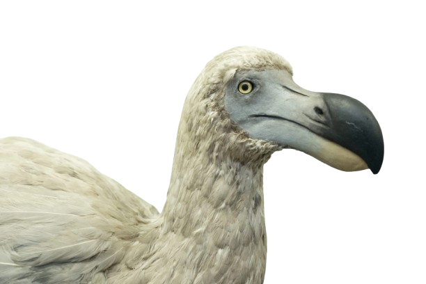
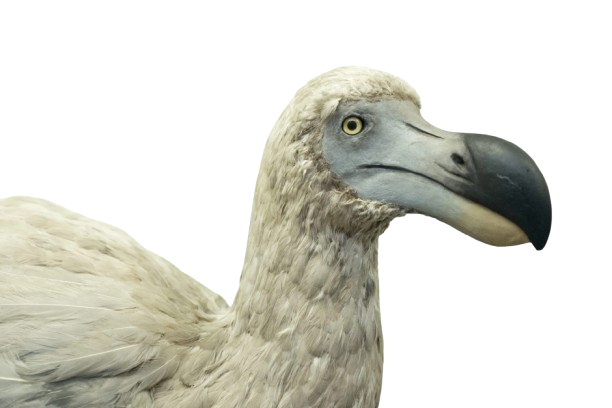

מגיש: זיו אביבי
אריה (שם מדעי: Panthera leo) הוא מין של טורף גדול מהסוג פנתר שבמשפחת החתוליים, והוא השני בגודלו בין בני הקבוצה דמויי חתול, אחרי תת-המין הסיבירי של הטיגריס.
האריה נפוץ בעיקר ביבשת אפריקה, אך גם במדינת גוג'ראט שבהודו. הוא ניזון מאוכלי עשב שונים אותם הוא צד, וכן מפגרים. בתרבות האנושית נחשב האריה סמל לגבורה וכוח, ולכן הוצמד לו הכינוי "מלך החיות". תוחלת חייו בטבע היא בין 12 ל-18 שנים, אך בשבי הוא יכול לחיות עד 30 שנה. שמות נוספים של האריה בשפה העברית הם ליש, שחל, שחץ ולביא. שם נקבת האריה הוא לביאה ואריה צעיר נקרא כפיר.
...קרא עוד

פיל הוא מונח לקבוצה פוליפילטית של שלושה מיני יונקים – פיל סוואנה אפריקני, פיל יער אפריקני ופיל אסייתי – שהם חיות היבשה הגדולות ביותר בעולם והמינים היחידים ששרדו במשפחת הפיליים. בעבר היו מינים נוספים מהמשפחה, ביניהם הממותה, הפלאולוקסודון והסטגוטטרבלודון שאינם נחשבים לפילים רגילים.
המאפיין הבולט ביותר של הפילים הוא החדק, שבעזרתו הם שותים, אוכלים ומתרחצים. מפיהם בולטים שני חטי שנהב, שהפכו אותם למטרה לציד רב שהביא לפגיעה קשה בהם. הפיל האסייתי ופיל הסוואנה האפריקני מצויים בסכנת הכחדה, ופיל היער האפריקני נמצא בסכנת הכחדה חמורה.
...קרא עוד
ג'ירף או בשמו העממי ג'ירפה (שם מדעי: Giraffa) הוא סוג פרסתן מעלה גירה ממשפחת הג'ירפיים, הכולל ארבעה מינים. הג'ירף נחשב לחיה היבשתית הגבוהה בעולם[
לג'ירף רגליים וצוואר ארוכים מאוד. גובה כתפיו כ-3 מטרים מעל הקרקע וגובה ראשו כ־5.3 מטר מעל פני הקרקע. צבעו חום-צהוב עם כתמים כהים וגדולים. צבע זה משמש לו בתור הסוואה מאויביו. ראיית הג'ירף חדה, והוא מיטיב לרוץ ולהימלט מאויביו במהירות של עד 60–65 קמ"ש.
...קרא עוד
דוֹדוֹ (שם מדעי: Raphus cucullatus, נקרא גם Didus ineptus על ידי קארולוס ליניאוס) הוא מין נכחד של עוף חסר יכולת תעופה, מתת-משפחת הרפיים שבמשפחת היוניים. הוא היה אנדמי לאי מאוריציוס שבאוקיינוס ההודי.
בן המשפחה הקרוב אליו ביותר מבחינה גנטית היה סוליטר רודריג (Pezophaps solitaria, באנגלית: Rodrigues solitaire), שנכחד אף הוא. יונת ניקובר היא בת המשפחה הקרובה ביותר לדודו שהשתמרה עד היום.
...קרא עוד 

תנין סיאמי (שם מדעי: Crocodylus siamensis) הוא מין של תנין ממשפחת התניניים החי בדרום-מזרח אסיה.
מין זה בינוני בגודלו אך קטן יחסית למינים אחרים בסוג תנין. אורכו 2.1 מטרים (6.9 רגל) משקלו מגיע ל-40–70 ק"ג, אם כי פרטים הרבה יותר גדולים התגלו, כשהגדול ביותר הגיע לאורך 4 מטרים (13 רגל) ושקל 350 ק"ג. התנינים גדולים הרבה יותר כשהם בשבי. לתנין זה חרטום מוארך, קשקשים עבים מעל העיניים וצבעם ירוק-זית עד ירוק כהה.
...קרא עוד
למה מצויה (שם מדעי: Lama glama) היא מין בסוג למה, ואחד מסמליהם המובהקים של הרי האנדים
הלמה מוכרת כחיה מבויתת באמריקה, ומשמשת לבשר וכבהמת משא עיקרית בידי הילידים. היא חיה בגבהים של 4,000-2,000 מטרים מעל פני הים. קיים תיעוד לגביה לפחות מאז התקופה הפרה-קולומביאנית. מקור שמה של החיה הוא בשפת הקצ'ואה העתיקה. באזור האנדים מבטאים את שמה לְיָמָה.
...קרא עוד
למור (שם מדעי: Eulemur), הוא סוג פרימטים ממשפחת הלמוריים החיים באי מדגסקר.
אורך למורים אלה 30–50 ס"מ ומשקלם 2–4 ק"ג. הם בעלי חוטם שחור מוארך ועיניים זהובות גדולות. הם שעירים ובעלי זנב ארוך והם יודעים לקפץ במהירות בין הענפים. הם יכולים לקפץ גם על הקרקע. צבע הפרווה משתנה מאדום אצל המין למור אדום לחום אצל המין למור חום.
...קרא עוד